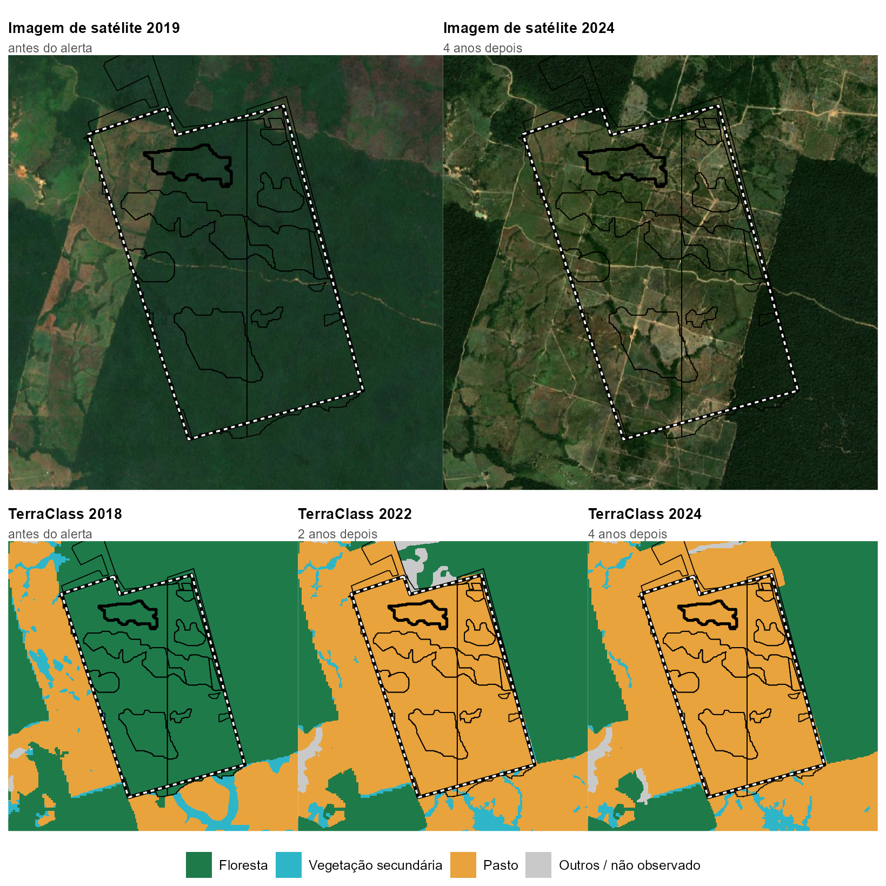

Embargômetro
Do alerta ao embargo: a resposta do poder público ao desmatamento na Amazônia Legal
edição de novembro de 2026 · alertas até outubro 2026
De cada 100 hectares desmatados na Amazônia em 2023, o Ibama embargou 17 em até dois anos
O satélite do Inpe detecta o desmatamento em dias. O embargo, que proíbe o uso da área desmatada ilegalmente, vem depois, quando vem. Em 2023, o Ibama embargou 17,1% da área dos alertas de corte raso em até dois anos, abaixo dos 29,4% de 2022, o maior valor da série. 2023 é o ano mais recente com o prazo de dois anos encerrado.
17,1%
da área desmatada em 2023 embargada pelo Ibama em até 2 anos
29,4% em 2022
7,6%
da área dos alertas de dezembro 2025 embargada em até 6 meses
o mês mais recente com 6 meses de prazo
5,4%
do desmatamento de 2023 ocorreu em área que o Ibama já tinha embargado
o “embargo no papel”
5,0%
da área de alertas de mineração em 2023 embargada pelo Ibama em até 2 anos
garimpo quase não é embargado
A resposta do Ibama, ano a ano
Porcentagem da área dos alertas de corte raso com embargo do Ibama registrado em até dois anos depois do alerta.
* 2016 é parcial: a série do Deter começa em agosto de 2016. Os alertas de 2024 em diante ainda não completaram dois anos.
Os meses mais recentes
O prazo de dois anos demora a fechar. Para acompanhar os alertas recentes, o observatório mede também quanto foi embargado em até seis meses.
O último ponto é dezembro 2025, o mês mais recente com seis meses de prazo encerrados e registrados nas bases públicas.
Por estado
Ibama, em até dois anos, % da área dos alertas de corte raso. A tabela está em ordem alfabética. Ela não serve para ordenar os estados: em alguns deles, os órgãos estaduais embargam mais que o Ibama. No Mato Grosso, por exemplo, o estado usa o auto de infração no lugar do embargo fora de áreas de preservação. A página de metodologia explica as fontes estaduais.
| UF | 2017 | 2018 | 2019 | 2020 | 2021 | 2022 | 2023 |
|---|---|---|---|---|---|---|---|
| AC | 4,4 | 4,9 | 3,5 | 3,9 | 11,0 | 15,5 | 15,8 |
| AM | 42,9 | 28,7 | 28,5 | 22,6 | 43,0 | 51,0 | 31,8 |
| AP † | 1,5 | 4,2 | 2,5 | 10,8 | 26,5 | 58,0 | 1,1 |
| MA | 8,5 | 6,6 | 1,2 | 6,4 | 0,3 | 9,6 | 11,1 |
| MT | 17,4 | 19,7 | 10,6 | 5,6 | 8,9 | 8,5 | 9,4 |
| PA | 12,8 | 20,6 | 15,0 | 22,0 | 26,8 | 29,2 | 14,6 |
| RO | 8,6 | 9,8 | 8,0 | 7,6 | 16,4 | 29,8 | 25,5 |
| RR | 3,5 | 3,8 | 5,2 | 4,3 | 14,0 | 18,3 | 16,3 |
| TO † | 0,5 | 0,0 | 0,0 | 0,0 | 0,5 | 0,0 | 0,0 |
| † Base pequena na maior parte dos anos (menos de 50 alertas ou de 1 mil ha). Fonte: Inpe (Deter) e Ibama; cálculo do observatório. | |||||||
Garimpo
Nos alertas de mineração do Deter, categoria que inclui o garimpo, a resposta do Ibama em até dois anos ficou entre 0,0% e 5,0% da área de 2016 a 2023. O valor mais alto, de 2023, vem quase todo de um único embargo sobre o garimpo na Terra Indígena Yanomami, em Roraima.
Um exemplo: de floresta a pasto embargado

Linha preta grossa: um dos alertas, de 30/03/2020. Linhas finas: os outros alertas do Deter dentro do embargo. Tracejado branco: embargo do Ibama de 24/06/2020. Fontes: Inpe (Deter, TerraClass), Ibama (termos de embargo), Sentinel-2 cloudless 2019 e 2024, de EOX IT Services GmbH (contém dados Copernicus Sentinel modificados).
- Antes. Em 2018, a área do retângulo, em Novo Progresso (PA), era floresta (99,7%, segundo o TerraClass).
- O alerta. Entre fevereiro e março de 2020, o Deter emitiu 13 alertas de corte raso ali, somando cerca de 1,7 mil hectares.
- O embargo. Em junho de 2020, o Ibama embargou 1.793 hectares, cobrindo todos os alertas, 86 dias depois do último.
- Depois. Em 2022 e em 2024, 99,8% da área embargada era pasto. O embargo continua em vigor na lista do Ibama.
- A multa. O Ibama não publica se as multas foram pagas. O observatório pediu esse dado pela Lei de Acesso à Informação.
O caso foi escolhido por uma regra fixa, antes de olhar o mapa: um alerta típico em tamanho e no prazo até o embargo. O embargo, de quase 1,8 mil hectares, é bem maior que a média. O exemplo ilustra o caminho, e os números do observatório vêm de todos os alertas.
Como ler. O observatório cruza no mapa os alertas de desmatamento do Inpe (Deter) com os polígonos de embargo do Ibama, do ICMBio e de cinco estados. Não afirma causa: mostra o que dizem os registros oficiais. Um alerta sem embargo pode ter recebido outra sanção, ou um embargo que não está nas listas públicas. Detalhes em Metodologia e dados.